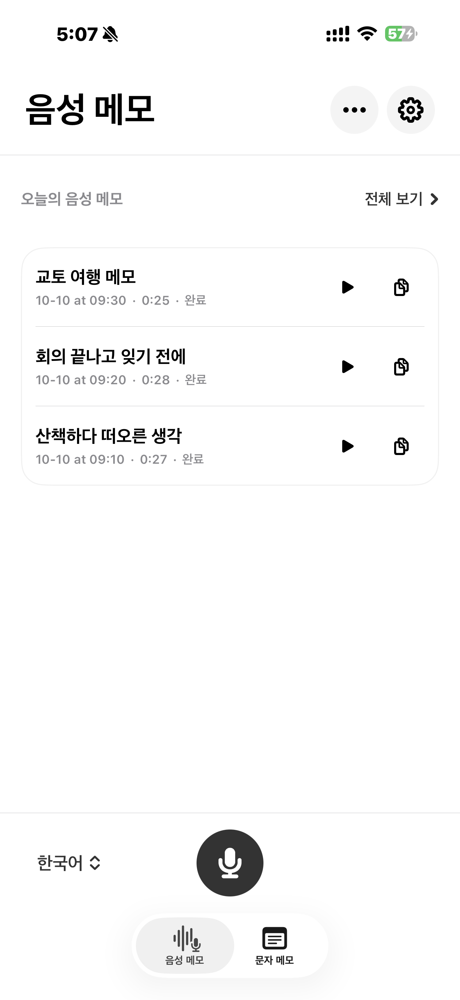

How to translate Korean voice notes into English on iPhone
Voice Here: Voice Notes can record you speaking Korean, transcribe the recording into Korean text, and translate the transcript into English. Replay your original audio and compare both texts when reviewing a voice note or practicing Korean.
Get Voice Here on the App Store · iPhone, iOS 26 or later
1. Set the recording language to Korean
In Voice Memos, select Korean using the language control next to the microphone. Tap the microphone, speak, and tap Stop when you finish.

2. Review the Korean transcript
Transcription starts when the recording is saved. Open the note and read the Original tab. You can correct any misheard words or transcribe the saved audio again if you picked the wrong language.

3. Open the English translation
Select English under Translation Languages in Settings. If automatic translation is off, or if you changed the transcript, tap Translate in the Original tab. Open the English tab when it’s ready to compare the translation with the Korean text.

Korean 내일 아침엔 가모강을 걷고 작은 카페에 들러야겠다.
English Tomorrow, I’ll walk along the Kamogawa River, then stop at a small café.
On-device processing and free trial
Recording, transcription, and translation run on the iPhone. The first use may need an internet connection to download language data. Availability and quality vary by device, language, and recording conditions.
Voice Here supports Korean, Chinese, English, and Japanese. You can try five successful transcriptions for free. A one-time Pro purchase unlocks on-device transcription and translation without a usage-count limit.